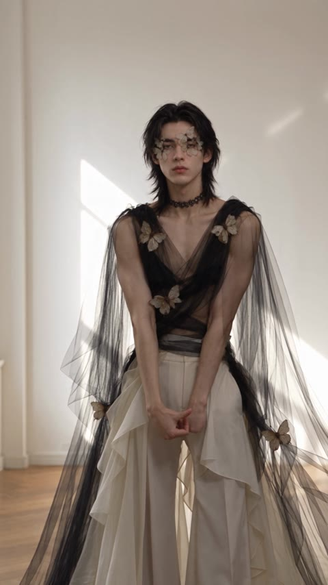

Find your next move.
Your daily dose of inspiration, ready for a fresh take.
THE CREATIVE POSSIBILITIES ARE YOURSGood ideas.
Good ideas.
Great moves.
Find a reference. Give it character.
Turn a little inspiration into your next video.
PLAY, EXPERIMENT, REPEAT

KAI in motionFrom your creation library▶Your character. Your story.—Reference videos
—Originals watched
—Saved creations
—Collections recorded
THE DISCOVERY FEED
A spark for your next story —
☷ More filters
Material
Cast
Original references, newest discovered first. Saved observations are not a live popularity ranking.
Reading collection records
LoadingLoading published observations.
Last attempt —Last result —America/New_York
Sources & collection details
Published observations come from the source workspace. Refresh reads this site's saved snapshot; it does not start collection or generation.
View source collection runs ↗THE PAPER TRAIL
Collection history —
A record of what was observed, and when. Each collection keeps its original snapshot.